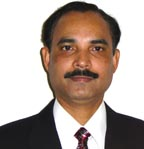

|
Aswini K. Pradhan, Ph.D.
Associate Professor

Education
- Ph.D. (Physics) Indian Institute of Technology, India,
1988
- M.S. (Physics, sp: Electronics) Utkal University, India,
1983
- B.S. (Physics Honors and Dist.) Utkal University, India,
1980

Honors
- Fellowship of the Royal Swedish Academy of Sciences, 1994,
Stockholm, Sweden.
- Member of SPIE, American Physical Society, JPS,
- 1989 Young Scientist Award, 1997 & 1999 ISTEC-Awards for
excellence in Research,
- Served as a board member of Magnetics at ISTEC.
- Leading the group at Microelectronic center at VCU
on the development of semiconductor-based (GaN & ZnO) spintronic materials.
- Cited as leading researcher in Marqui’s Who’s Who in
America, 2005.
- Research mentor of the Year, 2006 (Norfolk State
University).
- Adjunct Faculty: Institute of Materials Science, Orissa,
India (nominated by the Govt. of Orissa).
- Committee member: SPIE: Smart materials
- Reviewer:
- Presently serving as a Referee to
- Phys. Rev.Lett.,
- Physical Rev. B,
- Appl. Phys. Lett.,
- J. Appl. Phys.,
- Nanotechnology,
- Appl. Surf. Sc.,
- Europhys.
- J. B.,
- Physica C,
- JJAP,
- JOSA B,
- J. Phys.: Cond. Mat.,
- EPL,
- EPJB,
- JMR,
- J. Phys-C,
- NSF Research proposals,
- Australian Research Council (ARC) proposals,
- DoD,
- Army Research.
Employment History
-
2007- Present- Associate Professor, Department of Engineering, Norfolk State
University (NSU)
-
2003-2007-Research Professor, Center for Materials Research, Norfolk State
University (NSU)
-
2002-2003-Assistant Professor, Electrical Engineering Department, Virginia
Commonwealth University
-
2001-2002-Research Faculty, Dept. of Physics, University of Virginia
-
2001-Visiting Professor
at
Dept. of Applied Physics,
(Center for Excellence in Research),
University of Tokyo,
Japan
-
1997-2001-Senior Scientist,
at
Superconductivity Research Lab., Superconductivity Technology Center
(ISTEC), Tokyo,
Japan.
-
1996-1997-ISTEC-Fellow,
Superconductivity Research Lab.
At
ISTEC, Tokyo,
Japan.
-
1992-Visiting Research Fellow at
Blackett Laboratory, Imperial College, London
-
1991-1992 - Research Fellow
at the
Clarendon Laboratory,
Oxford University, U.K.
-
1990-1995-Senior Scientist
at Center for Advanced Technology, Laser Physics Division, Indore, India.
-
1988-1990
-Research
Associate,
Cryogenic, Eng. Center, Indian Institute of Technology, Kharagpur, India
Teaching History
- 1985-1987: Undergraduate Physics courses and labs for Integrated M.S.
degree at I.I.T, Kharagpur, India
- 1988-1990: Upper level Applied Physics/ Cond. Matter courses for M.
Tech. at IIT.
- 2001-2002: Supervising undergraduate and graduate students at the
University of Virginia
- 2002 Advanced Physics Course (690): Mat. Physics and experimental
techniques
Guided and co-guided M.Tech (IIT), Ph.D (Utkal University, SRL/ISTEC) and
graduate students at SRL.
- 2003- Present: MATS 530 – Graduate M.S. course in CMR
- 2006- present: OEN-360- Undergrad Engineering Course (Optical
Engineering)
- 2005- Present: Minicourse: Optical materials and self-assembly of
nanoparticles and nanostructures
- 2008: Present: OEN-530 – graduate course
- Spring 2009: MSE 704 Thin film Phenomena
- MS Graduate student advised at NSU: 10 (graduated)
- Graduate student Advising: 4 Ph.D., 3 M.S. students, and 4 undergrads.
- Ph.D.- D. Sahu, Presently at Taiwan, Currently 2 students enrolled for
Ph.D. in Materials science and engineering program.
Research Experience
Dr. Aswini K. Pradhan research group interests are:
the development and characterization of
nanostructured-materials, magnetic (spintronic), optical, electronic,
opto-electronic, and photonic materials.
Dr. Aswini K. Pradhan manages the shared research facilities
of the center. He also established state-of-the art Nanostructured-materials and
thin film laboratory and has strong
interdisciplinary research experience and collaborations.
For more details on Dr. Aswini K. Pradhan research
activities click here
Currently funded research projects
Research Proposals funded: Principal Investigator/Co-PI of research
proposals.
- STTR-NSF: Development of ZnO Spin Field effect transistor
(FET) -Co-PI, $100K/year for 3 yrs, Place: Electrical Eng., Virginia
Commonwealth University
- MRI-NSF: Acquisition of SQUID Magnetometer for
ferromagnetic semiconductors and oxides-Co-PI, $ 159,418, Place:
Electrical Eng., Virginia Commonwealth University
- NSU-INTEL Corp.: PI-Fabrication of single crystalline
Manganite Perovskite Films on STO buffered Si Substrates: PI. Total award
amount: $130,000 (awarded), Award Period: 01.01.05-12.31.07.
- NSF-RISE: Enhancement of Research Infrastructure in
Support of the New Ph.D. Program in Materials Science and Engineering at
Norfolk State University, Co-PI., Total award amount: $1M (awarded), Award
Period: 01.09.07-08.31.09.
- MRI-NSF: Acquisition of Electron Probe Micro-Analyses
(EPMA) for Research and Education -PI, $500,000 Place: ODU and Norfolk State
University, 2008.
- DoD: Research and Education in Development of
Multifunctional Sensors and MEMS Devices, PI, Total award amount: $529,000K
(Funded), Award Period: 06.15.09-06.14.12,
- Potential Contributor to CREST & CREAM projects at CMR
Publications
Dr. Aswini K. Pradhan research group authored more than
190 refereed publications in Internationally reputed journals, more than 80
publications in National and International conferences.
For more
details on Dr. Aswini K. Pradhan Research Group Publications click here
|
|
 |
|
| |
Dr. Aswini K. Pradhan
|
|
| |
|
|
| |
Engineering Department &
Center for Materials Research, Norfolk State University
700 Park Avenue
Norfolk, VA 23504Phone: (757) 823-2239 office
Laboratory:
(757) 823-000
Fax: (757) 823-9054
E-mail: apradhan@nsu.edu
|
|
|
|